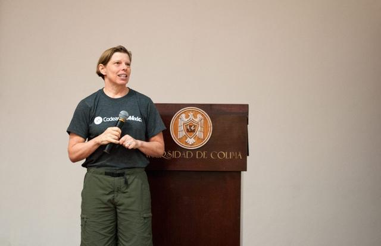

Picking on conditions
I come from smaltalk, with only 6 reserved words – and if was not one of them.
I don’t want a condition, I just want to send a message to an object (if is bad; it halts your OO thinking and leads you to write procedural code).
class Object
def if_true() yield; end
def if_false() self; end
end
class FalseClass
def if_true() self; end
def if_false() yield; end
end
class NilClass
def if_true() self; end
def if_false() yield; end
end
So we can do things like…
"anything".if_true { puts "evaluated block" }
nil.if_false { puts "evaluated block" }
(1 == 1).
if_true { puts "it's true" }
if_false { puts "it's false" }
Do not do it
Null Object Pattern
ids = ['pig', '', 'sheep']
animals = ids.map{ |id| Animal.find(id) }
=> [#<Animal: @name='pig'>,
nil,
#<Animal: @name='sheep'>]
animals.each {|animal|
if animal.is_a?(NilClass)
puts 'No animal'
else
puts animal.name
end
}
Let’s use Null Object Pattern
class MissingAnimal
def name() 'No animal'; end
end
Now we can do this:
ids = ['pig', '', 'sheep']
animals = ids.map{ |id| Animal.find(id) || MissingAnimal.new }
=> [#<Animal: @name='pig'>,
#<MissingAnimal>,
#<Animal: @name='sheep'>]
animals.each {|animal| puts animal.name }
And this can became better with
class GuaranteedAnimal
def self.find(id)
Animal.find(id) || MissingAnimal.new
end
end
…because we replace
animals = ids.map{ |id| Animal.find(id) || MissingAnimal.new }
with
animals = ids.map{ |id| GuaranteedAnimal.find(id) }
If you can take this home and use it, it will improve your code.
Composition over inheritance
Here we need some code to show. Sorry folks ):